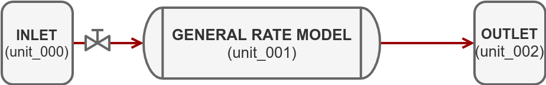
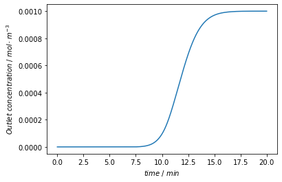

You're reading the documentation for a development version. For the latest stable documentation, please have a look at v5.1.X.
CADET-Python Introduction#
The CADET-Python API can be very useful for developers as it allows creating an arbitrary input configuration for CADET-Core. This is especially useful when new methods and models are added, which are not (yet) supported by the CADET-Process frontend. To demonstrate the use of CADET-Python, we set up a simulation in the following.
- Performing a forward simulation comprises several steps:
Setting up the model including all parameters and discretization options
Defining sections and switches
Setting up the simulator and actually running the simulation
Evaluating results (e.g., plotting)
In this tutorial, we will build a simple forward simulation with a breakthrough of one component using the following system:

For this purpose, we use CADET-Python, a file based frontend for CADET-Core.
CADET-Core still must be downloaded (or built from source) as explained in the installation guide.
The Python frontend almost exactly maps to the documented CADET file format except that all dataset names are lowercase.
This simplifies using the frontend.
The package includes a Cadet class which serves as a generic HDF5 frontend.
As an example, we consider setting the external porosity for the column model (unit_001).
From file format, the path for this is /input/model/unit_001/COL_POROSITY.
In the Python frontend, this becomes:
sim = Cadet()
sim.root.input.model.unit_001.col_porosity = 0.33
0. Preliminary Steps#
First, we need to import some libraries and specify the location of the cadet-cli executable (core simulator).
It is located in the bin folder where CADET was installed.
import numpy as np
import matplotlib.pyplot as plt
from cadet import Cadet
Cadet.cadet_path = '/path/to/cadet-core/install/prefix' # (e.g., '/usr/local')
To create the model and specify its parameters, we create an instance of the Cadet class.
In the root attribute of this object, the parameter structure is defined as described in the file format reference.
It is implemented as a Dict of the addict package.
This allows for creating arbitrary nested dictionaries using dot-notation.
Warning
Note, that the Cadet class does not provide any sanity checks.
If parameters are misspelled or have the wrong dimensions, they are simply ignored.
This can cause problems later on, when the simulator is run.
model = Cadet()
1. Setting Up the Model#
Although the order of the parameter specification does not matter, it is reasonable to first specify the number of unit operations before we select the models and define the parameters.
model.root.input.model.nunits = 3
The available models are listed in the unit operation chapter. The units of the different parameters and quantities are given in the corresponding file format of the respective unit operation.
Inlet Model#
In CADET, the INLET pseudo unit operation serves as a source for the system and is used to create arbitrary concentration profiles as boundary conditions.
First, we define an INLET as the first unit operation by adding the field unit_000 in the /input/model/ group.
The concentration profile is described using a piecewise cubic polynomial (cubic spline in the continuous case) for each component, where the pieces are given by the time sections.
Later, we will define the polynomials, when we look at time sections.
model.root.input.model.unit_000.unit_type = 'INLET'
model.root.input.model.unit_000.ncomp = 1
model.root.input.model.unit_000.inlet_type = 'PIECEWISE_CUBIC_POLY'
General Rate Model#
We now add a second unit operation, the column model.
For the general rate model model, we set the unit_type parameter of the corresponding unit operation model to GENERAL_RATE_MODEL.
In this group, we set the parameters related to transport and column geometry.
For a more detailed description of the parameters and their units, see the corresponding file format.
model.root.input.model.unit_001.unit_type = 'GENERAL_RATE_MODEL'
model.root.input.model.unit_001.ncomp = 1
## Geometry
model.root.input.model.unit_001.col_length = 0.1 # m
model.root.input.model.unit_001.cross_section_area = 0.01 # m
model.root.input.model.unit_001.col_porosity = 0.37 # -
model.root.input.model.unit_001.par_porosity = 0.33 # -
model.root.input.model.unit_001.par_radius = 1e-6 # m
## Bulk transport
model.root.input.model.unit_001.col_dispersion = 1e-8 # m^2 / s (interstitial volume)
## Particle transport
model.root.input.model.unit_001.particle_type_000.film_diffusion = [1e-5] # m / s
model.root.input.model.unit_001.particle_type_000.pore_diffusion = [1e-10,] # m^2 / s (mobile phase)
model.root.input.model.unit_001.particle_type_000.surface_diffusion = [0.0,] # m^2 / s (solid phase)
Note that film, particle, and surface diffusion are all component-specific, that is, they are vectors of length n_components.
Adsorption Model#
Every column model can be equipped with an adsorption model. The available models are listed in the binding model chapter.
For the Langmuir model, we set the adsorption_model parameter of the corresponding unit operation model to MULTI_COMPONENT_LANGMUIR.
Then, we decide if we want to use the rapid-equilibrium assumption in the binding model (is_kinetic = False), which is not the case here (dynamic binding).
Finally, the parameters of the binding model have to be set for each component (they are vectors of length n_components).
They are described in the corresponding file format specification.
In case of the Langmuir model, we have to specify the parameters mcl_ka, mcl_kd, and mcl_qmax.
model.root.input.model.unit_001.particle_type_000.adsorption_model = 'MULTI_COMPONENT_LANGMUIR'
model.root.input.model.unit_001.particle_type_000.nbound = [1]
model.root.input.model.unit_001.particle_type_000.adsorption.is_kinetic = True # Kinetic binding
model.root.input.model.unit_001.particle_type_000.adsorption.mcl_ka = [1.0,] # m^3 / (mol * s) (mobile phase)
model.root.input.model.unit_001.particle_type_000.adsorption.mcl_kd = [1.0,] # 1 / s (desorption)
model.root.input.model.unit_001.particle_type_000.adsorption.mcl_qmax = [100.0,] # mol / m^3 (solid phase)
Initial Conditions#
Next, we specify the initial conditions (concentration of the components in the mobile and stationary phases) for the column. These concentrations are entered as vectors, where each entry gives the concentration for the corresponding component. In this example, we start with an empty column.
model.root.input.model.unit_001.init_c = [0.0,]
model.root.input.model.unit_001.particle_type_000.init_cp = [0.0,]
model.root.input.model.unit_001.particle_type_000.init_cs = [0.0,]
Setting up the Discretization#
There are several options for adapting the spatial discretization of the PDE model.
However, the two most important ones are the spatial resolution in the column (axial direction) and in the particles, which are also set in this example.
This example uses the DG discretization, where the resolution is given by the polynomial degree (polydeg, par_polydeg) and the number of elements (nelem, par_nelem).
Warning
These are rather low values to make the examples run faster, since they are only for educational purposes. In practice, higher values are expected. Note that the WENO scheme, which handles the advection, drastically reduces the required amount of cells compared to an upwind scheme.
Moreover, we have to specify the number of bound states for each component. Finally, we set some other options for the discretization, which usually do not need to be changed.
## Discretization
### Grid cells
model.root.input.model.unit_001.discretization.spatial_method = "DG" # "FV" recommended for strong gradients, where DG might oscillate
model.root.input.model.unit_001.discretization.polydeg = 3 # recommended to be increased up to 5 if higher resolution is desired for smooth solutions
model.root.input.model.unit_001.discretization.nelem = 3 # recommended to be increased if higher resolution is desired
model.root.input.model.unit_001.particle_type_000.discretization.spatial_method = "DG"
model.root.input.model.unit_001.particle_type_000.discretization.par_polydeg = 3 # recommended to be increased if higher resolution is desired
model.root.input.model.unit_001.particle_type_000.discretization.par_nelem = 1 # recommended to stay fixed at 1 except for targeted resolution of particle (ie user defined par_disc_type)
### Other options
model.root.input.model.unit_001.discretization.particle_type_000.par_disc_type = 'EQUIDISTANT'
model.root.input.model.unit_001.discretization.use_analytic_jacobian = 1
Outlet Model#
The OUTLET is another pseudo unit operation that serves as sink for the system.
Note
In this case, the outlet unit is actually not required. We could use the outlet concentration signal of the column model instead.
model.root.input.model.unit_002.unit_type = 'OUTLET'
model.root.input.model.unit_002.ncomp = 1
2. Setting up Time Sections and Connections#
Time Sections#
Time sections are used to specify changes of parameter values during the simulation. A section typically corresponds to an operating step (load, wash, elute etc.), but can also be used to indicate changes in connectivity, or even discontinuities of model parameters.
In the /input/solver/sections/ group, nsec denotes the number of sections.
The start and end times of a section are given in the section_times vector.
It should always start at 0.0 and contains nsec + 1 values, that is, the ith section goes from section_times[i] to section_times[i+1].
The section_continuity indicates whether a transition from one section to the next is continuous in both the inlet and the parameters.
It has nsec - 1 number of values, since there is one transition less than there are sections.
The continuity is used in CADET’s time integrator, which needs to decide whether to restart on entering a new section.
If the transition is continuous, the time integrator can try to step over the transition without restarting, thus saving some computation time (since the restart is costly).
If you are unsure about the continuity, just leave it at 0.
model.root.input.solver.sections.nsec = 1
model.root.input.solver.sections.section_times = [0.0, 1200,] # s
model.root.input.solver.sections.section_continuity = []
As mentioned earlier, we now define the INLET profile using a piecewise cubic polynomial.
On each section \([ t_i, t_{i+1} ]\) a cubic polynomial \(p_i\) is defined:
where the coefficients of the polynomial are const_coeff (a), lin_coeff (b), quad_coeff (c), and cube_coeff (d).
Note that the constant coefficient const_coeff determines the starting concentration on each section.
The stopping concentration is given by \(p_i( t_{i+1} )\) or \(p_{i+1}( t_{i+1} )\) in case of a continuous profile.
In this example, which has only one section, we define its coefficients by adding the field sec_000 to the inlet unit (unit_000).
Since the column should be constantly fed with \(1.0 \cdot 10^{-3} mol / m^3\), we set const_coeff to [1.0e-3] and all other coefficients to [0.0].
Note that for more components, a vector of coefficients needs to be specified.
model.root.input.model.unit_000.sec_000.const_coeff = [1.0e-3,] # mol / m^3
model.root.input.model.unit_000.sec_000.lin_coeff = [0.0,]
model.root.input.model.unit_000.sec_000.quad_coeff = [0.0,]
model.root.input.model.unit_000.sec_000.cube_coeff = [0.0,]
System Connectivity#
In order to specify the connectivity of the network, we have to provide a list of connections. CADET requires that we append all connections to a long vector (i.e., if each connection is a row in a matrix, CADET wants this matrix in row-major storage). Moreover, we have to specify the section in which the specified connectivity should be applied.
The elements of a connection are (in order):
[UnitOpID from, UnitOpID to, Component from, Component to, Volumetric flow rate]
Usually, Component from and Component to can be set to -1, which will connect all components from the origin and destination unit operations.
Note
Since CADET version 4.1, the flow rates can also be defined with piecewise cubic polynomials. Also, for the 2D general rate model, inlet ports need to be specified. For more information on the parameters, see the file format specification.
In this case, we connect all components of unit_000 to unit_001, and from unit_001 to unit_002.
model.root.input.model.connections.nswitches = 1
model.root.input.model.connections.switch_000.section = 0
model.root.input.model.connections.switch_000.connections = [
0, 1, -1, -1, 60/1e6, # [unit_000, unit_001, all components, all components, Q/ m^3*s^-1
1, 2, -1, -1, 60/1e6] # [unit_001, unit_002, all components, all components, Q/ m^3*s^-1
Note
Since the flow in the column models is incompressible, the total entering flow rate must equal the total outgoing flow rate. This restriction does not apply to a CSTR model, because it has a variable volume.
3. Setting Up the Simulator and Running the Simulation#
Before we can start the simulation, we have to specify some settings for the simulator.
First, we set some options for the solver and the time integrator. Usually, these only need to be adapted in special cases.
model.root.input.model.solver.gs_type = 1
model.root.input.model.solver.max_krylov = 0
model.root.input.model.solver.max_restarts = 10
model.root.input.model.solver.schur_safety = 1e-8
# Number of cores for parallel simulation
model.root.input.solver.nthreads = 1
# Tolerances for the time integrator
model.root.input.solver.time_integrator.abstol = 1e-6
model.root.input.solver.time_integrator.algtol = 1e-10
model.root.input.solver.time_integrator.reltol = 1e-6
model.root.input.solver.time_integrator.init_step_size = 1e-6
model.root.input.solver.time_integrator.max_steps = 1000000
Of these options, the most interesting ones are time_integrator.abstol and time_integrator.reltol, which control the errors during time integration, and nthreads, which sets the number of CPU cores CADET is allowed to use.
Second, we have to specify which results we want CADET to return.
For this, we have to specify the /input/return/ group.
For more information, see the file format specification.
Note
Because return is a reserved keyword in Python, we cannot use dot-notation but have to use the ‘proper’ dictionary indexing syntax.
In this example, we want to write the concentration profile of the inlet and outlet of each unit operation. In addition, we are interested in the concentration in the interstitial volume (bulk volume) of the column.
model.root.input['return'].split_components_data = 0
model.root.input['return'].split_ports_data = 0
model.root.input['return'].unit_000.write_solution_bulk = 1
model.root.input['return'].unit_000.write_solution_inlet = 1
model.root.input['return'].unit_000.write_solution_outlet = 1
# Copy settings to the other unit operations
model.root.input['return'].unit_001 = model.root.input['return'].unit_000
model.root.input['return'].unit_002 = model.root.input['return'].unit_000
Finally, we have to set the time points at which we want to evaluate the solution.
Note that the end time must not exceed the last section time specified in the model.
If the time points are not set explicitly, the time integrator outputs the solution at arbitrary time points between 0 and section_times[-1].
model.root.input.solver.user_solution_times = np.linspace(0, 1200, 1001)
The last remaining step is to actually run the simulation.
For this, we have to specify a filename, save the configuration to H5-format and call the model’s run() function.
We check if the simulation has completed successfully and load the results.
model.filename = 'model.h5'
model.save()
data = model.run()
if data.return_code == 0:
print("Simulation completed successfully")
model.load()
else:
print(data)
raise Exception("Simulation failed")
4. Plotting the Results#
The data is stored in the /output/ group of the Cadet object.
The structure and format of the data is described in the file format specification.
Finally, we plot the concentration signal at the outlet of the column.
plt.figure()
time = model.root.output.solution.solution_times
c = model.root.output.solution.unit_001.solution_outlet
plt.plot(time/60, c)
plt.xlabel('$time~/~min$')
plt.ylabel('$Outlet~concentration~/~mol \cdot m^{-3} $')
plt.show()

Exercises#
Add a second inlet section from
10000to40000seconds in which no sample is fed into the column (rectangular pulse).Increase the length of the column and the flow rate.
Increase the desorption coefficient
MCL_KD.Add a second component.
Plot the concentration profile of the
INLETunit operation.